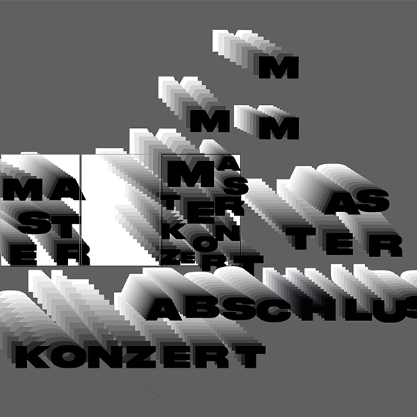
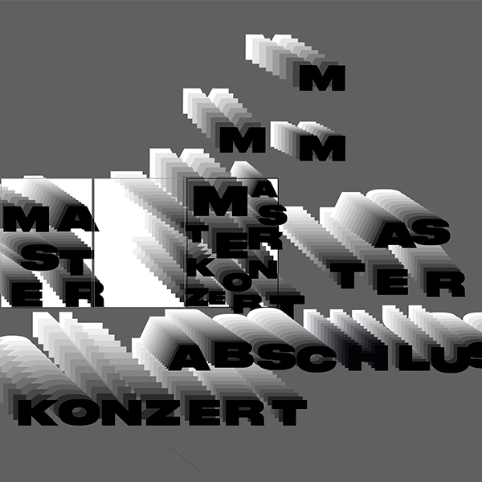

Wie kann man Musik sichtbar machen? Mein Projekt begann mit einfachen Experimenten: analog auf Papier,
digital mit Kamera, Flüssigkeiten und Stop-Motion. Dabei wurde schnell deutlich, wie stark Musik und
Gestaltung zusammenhängen – beide leben von Rhythmus, Tempo und Bewegung. Diese Verbindung bildet die
Grundlage meines Plakats.
Entstanden ist es aus analogen Scans von Milchpapier, die ich übereinanderlege und digital weiterbearbeite.
Dazu kommt eine kurze Animation, die die Idee der Bewegung ergänzt. Der Schwarz-Weiss-Look konzentriert
alles auf Formen und Abläufe und zeigt, wie Musik als Bewegung im Bild erfahrbar wird.

 
